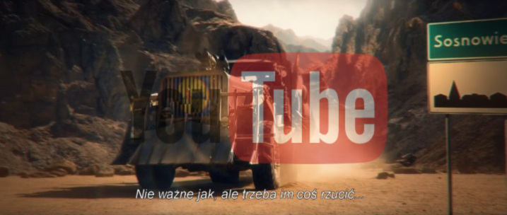
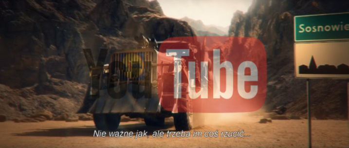

Witaj na naszej stronie!
Jesteśmy RG
Crew. Zajmujemy się
projektowaniem i tworzeniem dwuwymiarowych gier mobilnych oraz
tworzeniem filmów animowanych i machinim. Na swoim koncie
nie
mamy jeszcze żadnych spektakularnych sukcesów, ale staramy
się to zmienić.
"Na Drodze do Lidla"

"Wariat Janek: Na drodze do Lidla" to kolejna część serii zapoczątkowanej jednym z najbardziej widowiskowych filmów na świecie pt. "LIDL: Walka o karpia". Jest to sequel "INWAZJI: Bitwy o LIDL". Kolejne wyprzedaże - kolejne starcia. Cała Polska jest w rozsypce. Miasta wymarły, dostaw ciągle mało. Pojawia się ON! Wariat Janek! W roli tytułowej Cezary Pazura.
TEASER "Firestarter"

Teaser pokazujący metamorfozę Kolesia - ze zwykłego szarego frajera do psychola wkurzonego na całe, otaczające go społeczeństwo. Zapraszamy więc do zapoznania się z nim i podzielenia się opiniami.
"Na Drodze do Lidla"

"Wariat Janek: Na drodze do Lidla" to kolejna część serii zapoczątkowanej jednym z najbardziej widowiskowych filmów na świecie pt. "LIDL: Walka o karpia". Jest to sequel "INWAZJI: Bitwy o LIDL". Kolejne wyprzedaże - kolejne starcia. Cała Polska jest w rozsypce. Miasta wymarły, dostaw ciągle mało. Pojawia się ON! Wariat Janek! W roli tytułowej Cezary Pazura.
TEASER "Firestarter"
Teaser pokazujący metamorfozę Kolesia - ze zwykłego szarego frajera do psychola wkurzonego na całe, otaczające go społeczeństwo. Zapraszamy więc do zapoznania się z nim i podzielenia się opiniami.